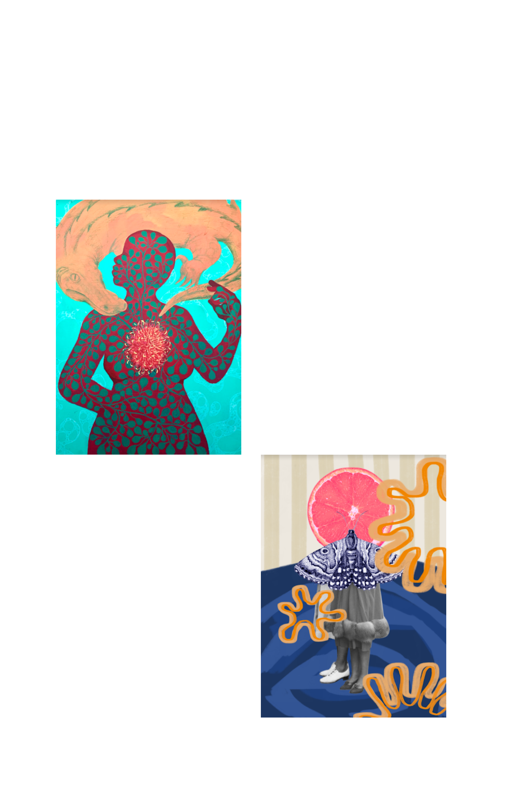
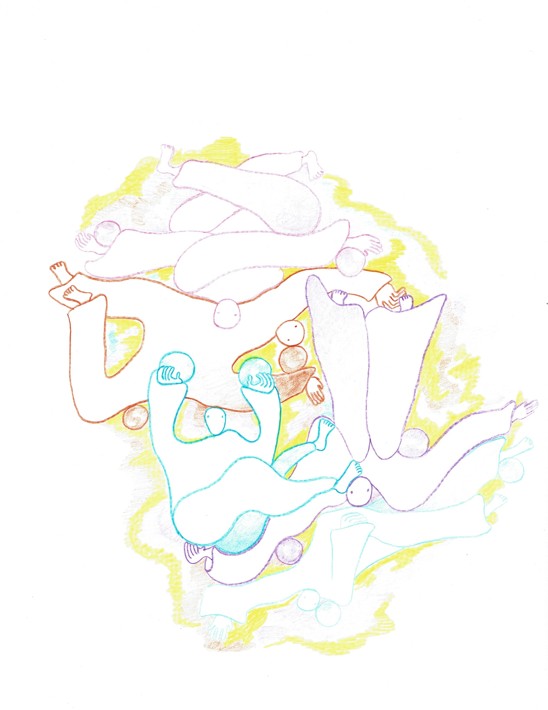
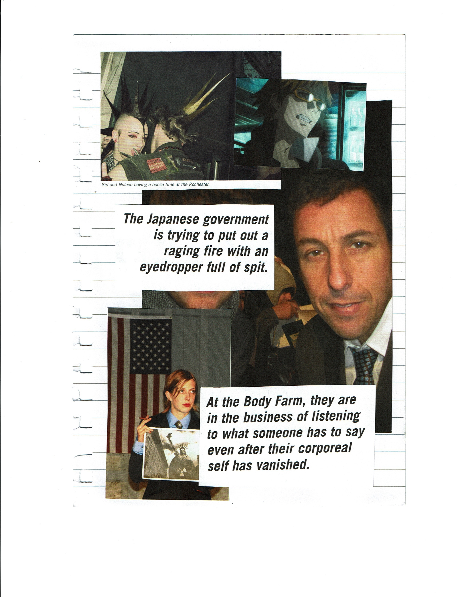

Table of Contents
- Letter From the Editors Original Music
Letter from the Editors
The McGill Tribune is proud to present the Fall 2020 Creative Supplement, highlighting excellent creative work by McGill students, including poetry, photography, illustrations, and mixed-media. We appreciate all the artists who submitted; it was a pleasure to review your work.
Although McGill doesn’t have a formal visual arts program, students find their own creative outlets. The Creative Supplement serves as a platform to highlight these endeavours. McGill students are notoriously bright and hardworking; we hope this issue proves that they are also immensely talented. ***something about covid?***
- Kate Addison, News Editor
- Ben Alexandor and Sasha Njini, Web Designers
- Ruobing Chen and Chloe Rodriguez, Design Editors
- Jonathan Giammaria, Arts & Entertainment Editor
- Sophia Gorbounov, Science & Technology Editor
- Sarah Ford, Multimedia Editor
- Aidan Martin, Creative Director
- Katia Lo Innes and Kaja Surborg, Managing Editors
- Marie Saadeh, Social Media Editor
- Helen Wu, Editor-in-Chief

???
Unalive: Have I Sinned?
???
most days I lay in my casket unwavering,
the heaviness of laboured feet dragging
polluted soil. I lay
as you sobbed selfish tears, cascading
murky with holy water; You
commanded I be cured.
I, who lay unmoved, devoid of joyous
normalcy, bounded to sturdy Earth;
for how could I be reborn when
I could not feel.
feel? I lift my body, a feeble attempt; it resisted Home-
cooked meals, meals you blessed
with love.
but what did You know of undying love, that
I had sinned when my mind escaped
my body like a helpless
mouse eviscerating in unholy traps succumbing
to certain death.
but how
would it live its last moments- did the mouse
know its body defied its essence? did it
scamper purposefully towards death?
Did I?
You’d pray for me, who once swam
in the sureness of your womb and
howled when you threw
me out. for a casket houses the dead
and they may rest in certainty, as I
wish, but I always will be
unalive.
the heaviness of laboured feet dragging
polluted soil. I lay
as you sobbed selfish tears, cascading
murky with holy water; You
commanded I be cured.
I, who lay unmoved, devoid of joyous
normalcy, bounded to sturdy Earth;
for how could I be reborn when
I could not feel.
feel? I lift my body, a feeble attempt; it resisted Home-
cooked meals, meals you blessed
with love.
but what did You know of undying love, that
I had sinned when my mind escaped
my body like a helpless
mouse eviscerating in unholy traps succumbing
to certain death.
but how
would it live its last moments- did the mouse
know its body defied its essence? did it
scamper purposefully towards death?
Did I?
You’d pray for me, who once swam
in the sureness of your womb and
howled when you threw
me out. for a casket houses the dead
and they may rest in certainty, as I
wish, but I always will be
unalive.

???
Reading my Palm
Erica Brown
Reading your own palm is harder than it seems
And I never quite remember how it’s done
What all the wrinkles and folds mean
Is the broken line down the center my life?
Or my heart?
Or is it just a crease from the heavy box I’ve been carrying
And I never quite remember how it’s done
What all the wrinkles and folds mean
Is the broken line down the center my life?
Or my heart?
Or is it just a crease from the heavy box I’ve been carrying

Sarah Bentivegna

Daria Kiseleva


Ava Zwolinski
Junk
Lowell Wolfe
A river-side tire,
Tossed aside by some plighted wanderer.
High potential for travel included.
Tossed aside by some plighted wanderer.
High potential for travel included.

Gloria François
The Cherub
?????
In the 5 minutes before you die they say the Cherub of all Important Things You Did comes to slide his freakish grin across your body. His plump lips are firm as they roll over your stomach and you’re reminded of the appendicitis that stormed your abdomen as a child. His lips kiss your knees and you remember how you have begged people not to leave you, how you have knelt down at the foot of a lover and bit their wrist or tugged their coat and drooped like a dog as you watched them go into the night without you. The Cherub rubs your face in his hair and he smells like baby powder and salamanders and you remember the careful drip of the sink in your university apartment, always threatening you with silence. He tickles your feet and you feel the gentle stick of the morning grass in your parents’ backyard. He touches your thigh and you feel the weight of another body, the caress of someone else’s flesh, the feeling you have chased far and wide. The Cherub runs his hands along your back and you remember that you lost a friend. He gently kisses your lips with his Heavenly Spit and you remember what it felt like to be loved in this life. To be cared for, to be shielded from the glass shards or the electrical panel. The Cherub whispers and the sound of his voice tastes like melted ice cream, like rich chocolate swirl, like your favourite meal that you will never have again. The Cherub takes your hands and twirls you around and suddenly you are dancing on the sidewalk in a shimmery dress, and you’re swaying from the vodka shots that pelted your throat with vengeance. The Cherub puts bandaids on your arms and you are six years old pulling on a yellow raincoat to jump through the puddles sitting on the pavement from the day’s downpour. The Cherub tugs your hair and you are leaning over the toilet bowl releasing your guilt. It splashes over the edge. The Cherub writes your name with his finger on your back and you are walking home alone while the city growls from car engines. Their headlights are so bright you can’t look away. The Cherub slowly drags his fingers down your arms to your outstretched hands and lets go. The Cherub burrows in your stomach and you lie down in the exact place you’re supposed to die. And you stroke your own hair.

???